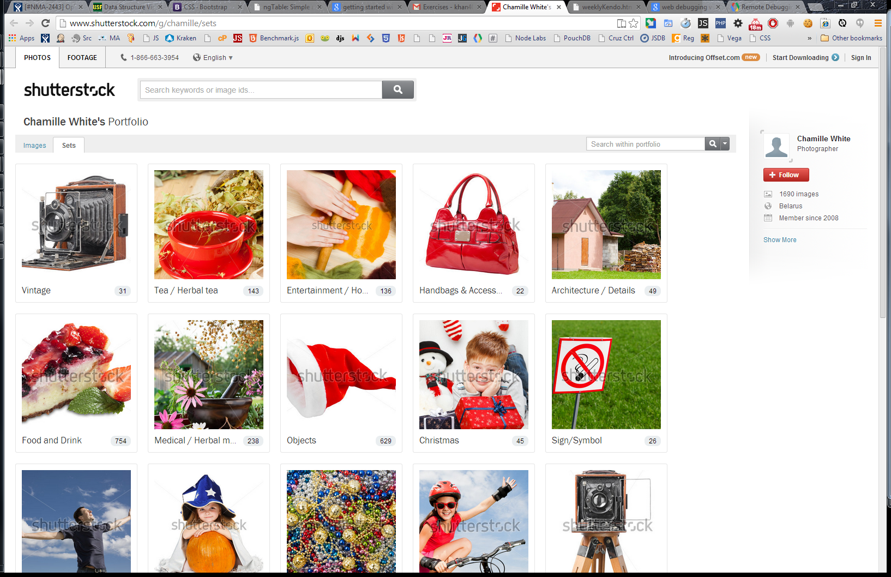

//header at top followed by a list of content blurbs (in this example, 4)
//media query min-width 500 px: two columns of content with spacing
// header
// content 1 content 2
// content 3 content 4
//
// text “Header” width 100% height 100px background green
// text “Content #” width 200px height 200px background red
//media query max-width 499 px: one column of content with spacing
// header
// content 1
// content 2
// content 3
// content 4
//
// text “Header” width 100% height 100px background green
// text “Content #” width 100% height 200px background blue
Pure css navigation
Question: Can you create a navigation like the image below? Doesnt have to pretty. Don't spend more than 10min.

Step-1: Create html
Just create an unordered list <ul></ul> and all the menu options will be list item <li></li>. And to navigate to somewhere we will use an anchor tag <a></a>. If you have a drop down menu, then create unordered list list the list item.
<nav>
<ul>
<li><a href="#">JavaScript</a>
<ul>
<li><a href="#">Basic JavaScript</a></li>
<li><a href="#">Beginners Algorithm</a></li>
<li><a href="#">Dom related</a></li>
</ul>
</li>
<li><a href="#">CSS</a>
<ul>
<li><a href="#">Basic CSS questions</a></li>
<li><a href="#">Pure CSS mockup</a></li>
</ul>
</li>
<li><a href="#">HTML</a></li>
<li><a href="#">Web</a></li>
<li><a href="#">Data Structure</a>
<ul>
<li><a href="#">Linked List</a></li>
<li><a href="#">Search and Sort</a></li>
<li><a href="#">Tree</a></li>
<li><a href="#">Graph, map, vector</a></li>
</ul>
</li>
</ul>
</nav>
output: will look like this
Step -2: add style
We will add three style. first, take off the list style. Here we will remove the unordered list under nav. Secondly, we will hide the child content of the menu. to do this, we will call display: none for ul under ul. Third, if you hover over a list item, then display the ul under it
nav ul{
list-style:none;
}
nav ul ul{
display: none;
}
nav ul li:hover > ul{
display: block;
}
Step -3: add more style
The first problem, we have there is things are offset from the left. So, we will add padding 0 for ul. In a menu items at the root of the menu are styled side by side in a horizontal level. Hence, we will add float left for all the list item under unordered list.
nav ul{
padding: 0;
}
nav ul li{
float: left;
}
Content Below 1
Content Below 2
Step -4: add more style
Now will solve two problem. Most important problem is, As the menu item is sitting next to each other
nav ul ul li{
float: none;
}
nav ul li a{
padding: 20px 40px;
}
Content Below 1
Content Below 2
Content Below 3
Content Below 4
Step -5: add more style
To avoid forcing content below. you have to apply two rules. First, make ul under nav to be positioned as relative. second, make ul under ul (which contains sub menu items), to be positioned relative
Now, sub menu will not be forced below.
nav ul{
position: relative;
}
nav ul ul {
position: absolute;
}
Content Below 1
Content Below 2
Content Below 3
Content Below 4
Step - 6: put some color
To avoid forcing content below. you have to apply two rules. First, make ul under nav to be positioned as relative. second, make ul under ul (which contains sub menu items), to be positioned relative
Now, sub menu will not be forced below.
nav ul{
background: #efefef;
}
nav ul li:hover{
background: #4b545f;
}
nav ul li a{
color: #757575;
}
nav ul li:hover a{
color:#fff;
}
End
ref: create pure css Extra one
psd to mockup
create mock

create another mock
Will have left and right panel. and you will have floated elements inside it left side name and text and the right side number of likes
little higher level

floated items inside floated times and two sides
left side will be 200px and right side will be rest of the page and in terms of percentage
three column layout and width related problem
search for it or at least try to make something up
create a button like css tricks interview
link for css tricks and there you will find so many solutions. learn it and put it here
Don't worry about the questions here
this is only for developing layout from css
List of Questions
- very good 47 css tips and tricks
- How do u center hotizontal center
- vertical centering text with line height
- vetical center of block level layout
- link style order
- min height fix for IE (14)
- How to set base font size (15)
- how to do drop caps by css
- setting padding on background image/ stretching (23, 24)
- use image a list bullets(26)
- swap background image on hover
- basic 3 column layout (33)
- prevent line break
- create circles with border radius (45)
- css tooltips
- ref: Force directed graph in d3
- Making your footer saty at foot with css
- five ways of vertical centering
- making modular layout
- bar chart with css (ggl it)
- 22 advanced css text effect
- css 12 little known facts
- css shapes
References
good site design:other questions
- make a div follow when u scroll
- two column on fixed another fluid check this or another example
- how quirks mode changes css box model
- why quirks mode is used
- what are the problem of quirk mode in old browser. may be FOUC (flash of unstyled content). most likely happens with old IE
- why inline elementd dont have width
- How you increase performance of your css
- How will you make a website response
- If you want to make a website responsive, you will you start
- how will you start when you have to make a site compatible to different browser
Floats and computed height
will help in interview
A parent element that has only floated content will have a computed height: 0;. Add a clearfix to the parent to force browsers to compute a height.
ref: wtf css (get others)
Deleted Scenes!
Looks like these are for hardcore designer folks. Hence, didn't make in for developers.
Need more: HTML Interview Questions, JavaScript Beginners Algorithm
Need more: HTML Interview Questions, JavaScript Beginners Algorithm